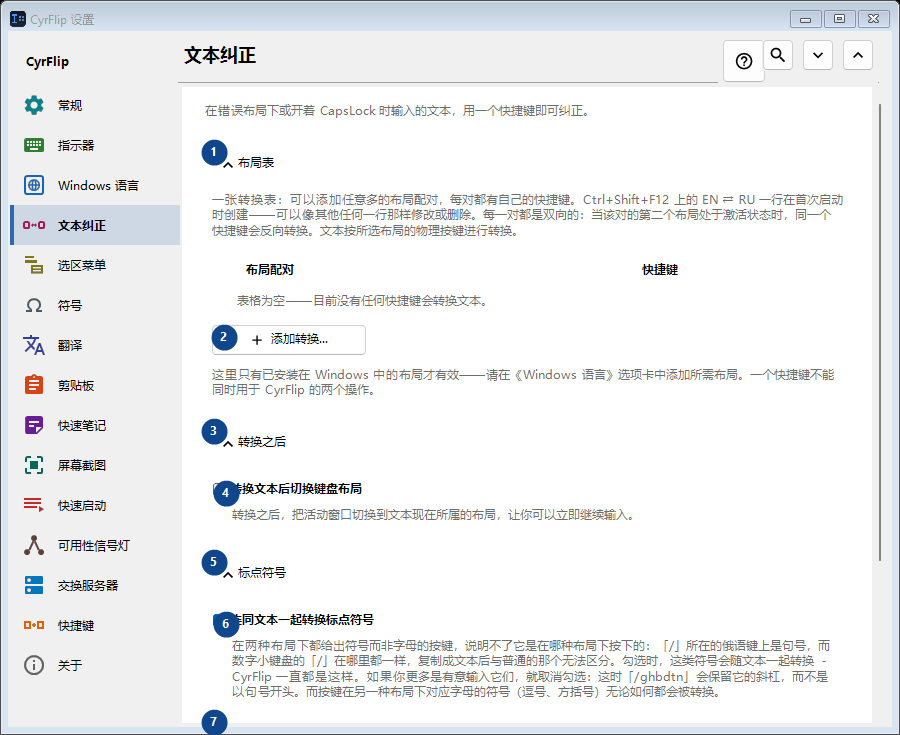
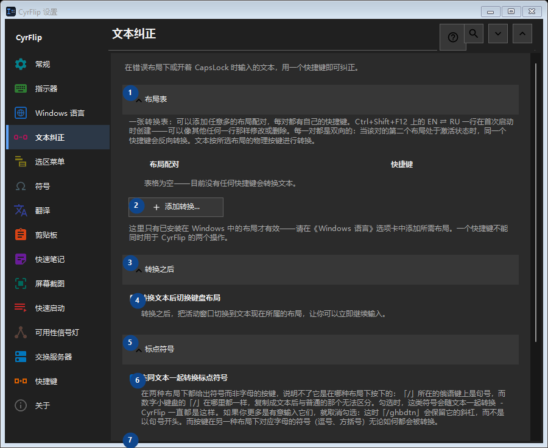

文本纠正
用途
在错误布局下或开着 CapsLock 时输入的文本，用一个快捷键即可纠正。


使用顺序
设置立即生效，无须按固定顺序操作；请使用以下分组。
界面元素
1. 布局表
需要执行上述操作时使用此命令。接受前请阅读确认提示。
你的快捷键2. 添加转换...
需要执行上述操作时使用此命令。接受前请阅读确认提示。
你的快捷键3. 转换之后
需要执行上述操作时使用此命令。接受前请阅读确认提示。
你的快捷键4. 转换文本后切换键盘布局
转换之后，把活动窗口切换到文本现在所属的布局，让你可以立即继续输入。
你的快捷键5. 标点符号
需要执行上述操作时使用此命令。接受前请阅读确认提示。
你的快捷键6. 连同文本一起转换标点符号
在两种布局下都给出符号而非字母的按键，说明不了它是在哪种布局下按下的：「/」所在的俄语键上是句号，而数字小键盘的「/」在哪里都一样，复制成文本后与普通的那个无法区分。勾选时，这类符号会随文本一起转换 - CyrFlip 一直都是这样。如果你更多是有意输入它们，就取消勾选：这时「/ghbdtn」会保留它的斜杠，而不是以句号开头。而按键在另一种布局下对应字母的符号（逗号、方括号）无论如何都会被转换。
你的快捷键7. 大小写
需要执行上述操作时使用此命令。接受前请阅读确认提示。
你的快捷键8. 修正 CapsLock
交换所选文本的大小写；不小心开着 CapsLock 时很有用。
你的快捷键9. 更改 - 修正 CapsLock
需要执行上述操作时使用此命令。接受前请阅读确认提示。
你的快捷键10. 更正大小写后同步 CapsLock
更正大小写后改变 CapsLock 的实际状态，使后续按键与更正后的文本一致。
你的快捷键